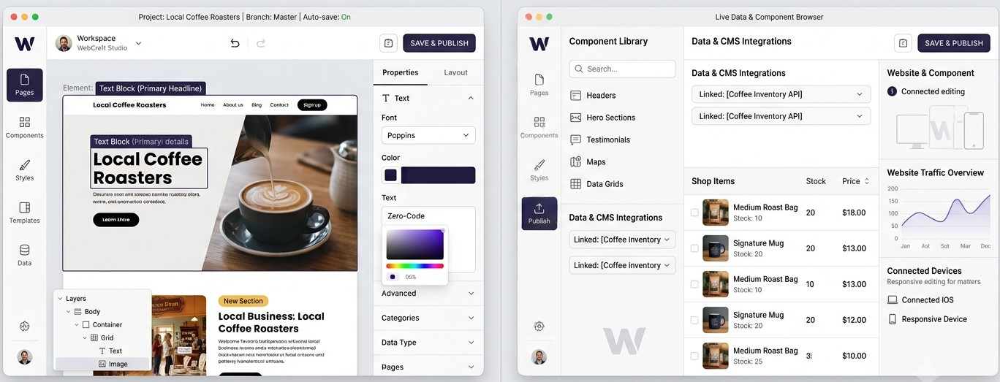
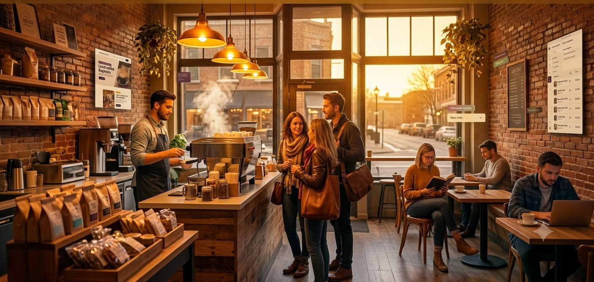

It is an automated engine engineered to turn raw notebook files into live operational websites in seconds. Instead of tracking backend dependencies manually, you supply client metrics, activate a localized layout blueprint, and export structural file directories instantaneously.

Open your deployment environment workspace and map target contact paths, unique link indicators, and palette hex specifications recorded directly from client profiles.
Interact with live compiled layouts side-by-side inside the viewport. Append layout changes instantly via integrated side control panels.
Finalize processing rules. The engine bundles static application codes and operational components directly into dedicated physical server storage clusters.

By binding custom category fields to localized code architectures, a single developer compiled a fully functional responsive storefront in under a minute. Includes native click-to-chat capabilities and modular layout grids perfectly scaled out of the box.